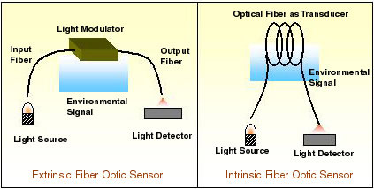

Some of the advantages of fibre optic sensors are freedom from electro magnetic interference, wide bandwidth, compactness, geometric versatility and economy. In general, fibre optic sensor is characterized by high sensitivity when compared to other types of sensors. It is also passive in nature due to the dielectric construction.
There are a variety of fibre optic sensors. Based on the modulation and demodulation process a sensor can be called as an intensity , a phase, a frequency, or a polarization sensor. Since detection of phase or frequency in optics calls for interferometric techniques, the latter are also termed as interferometric sensors. Fibre optic sensors can also be classified on the basis of their application.
* Physical sensors : used to measure physical proparties like temperature, stress, etc.
* Chemical sensors : used for pH measurement, gas analysis, spectroscopic studies, etc.
* Bio-medical sensors : used in bio-medical applications like measurement of blood flow , glucose content etc.
Fibre optic sensors can again be classified as extrinsic or intrinsic sensors. In the former, sensing takes place in a region outside of the fibre and the fibre essentially serves as a conduit for the to-and-fro transmission of light to the sensing region .On the other hand, in an intrinsic sensor one or more of the physical properties of the fibre undergo a change and this change is measure of the external perturbation.
